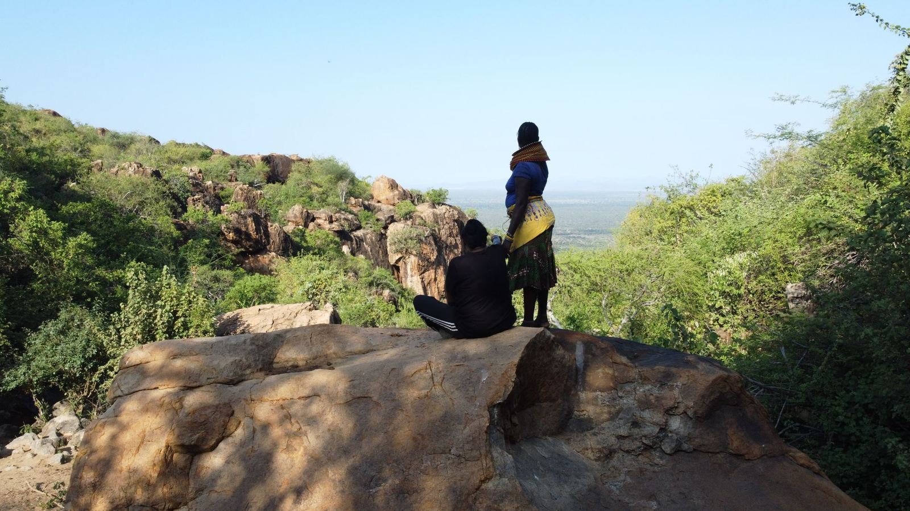
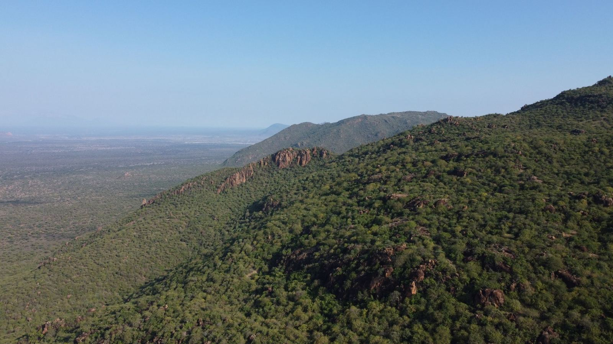
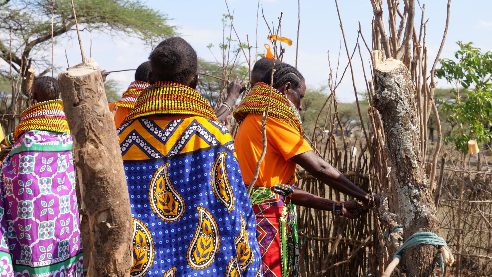
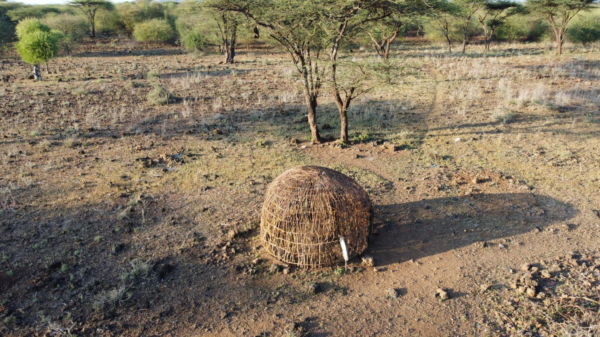
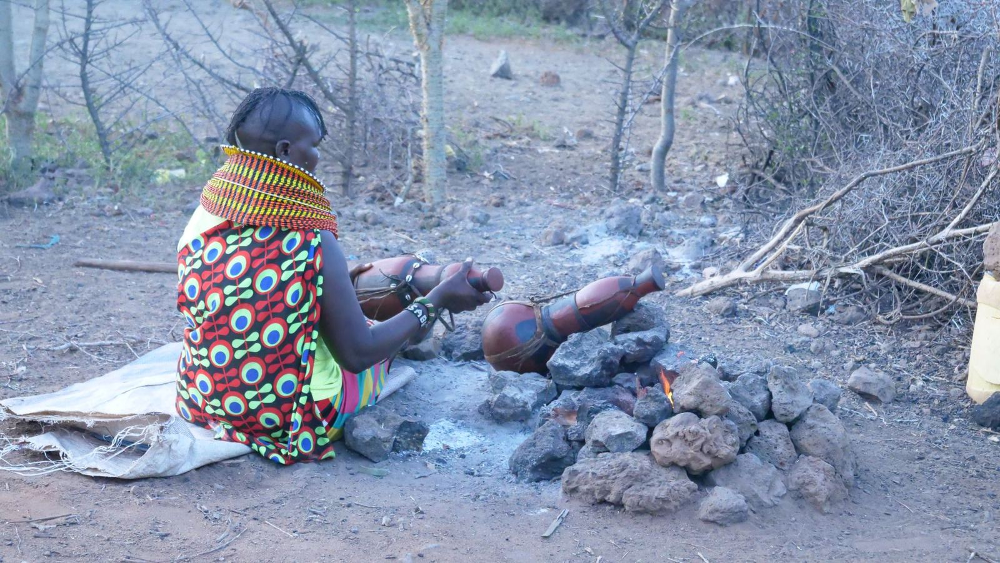
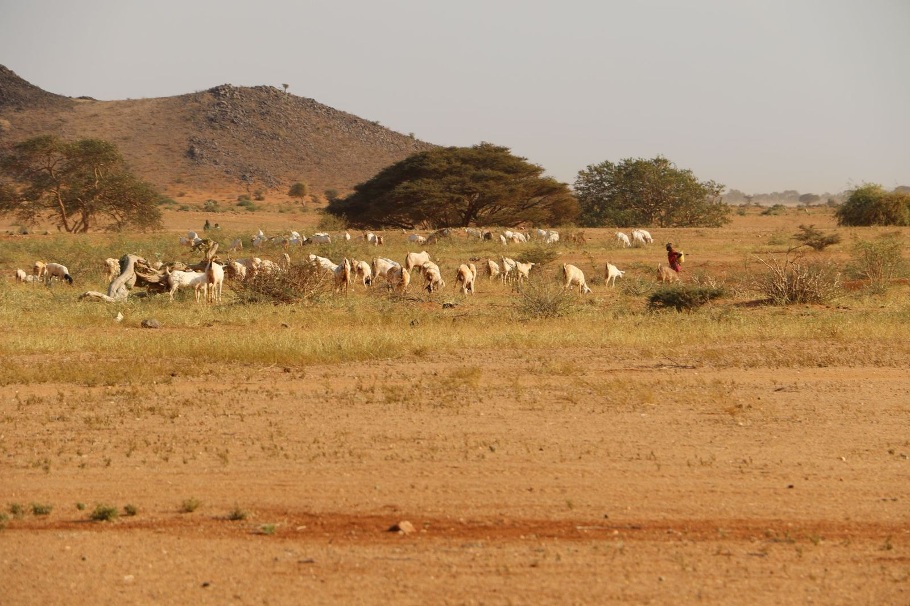
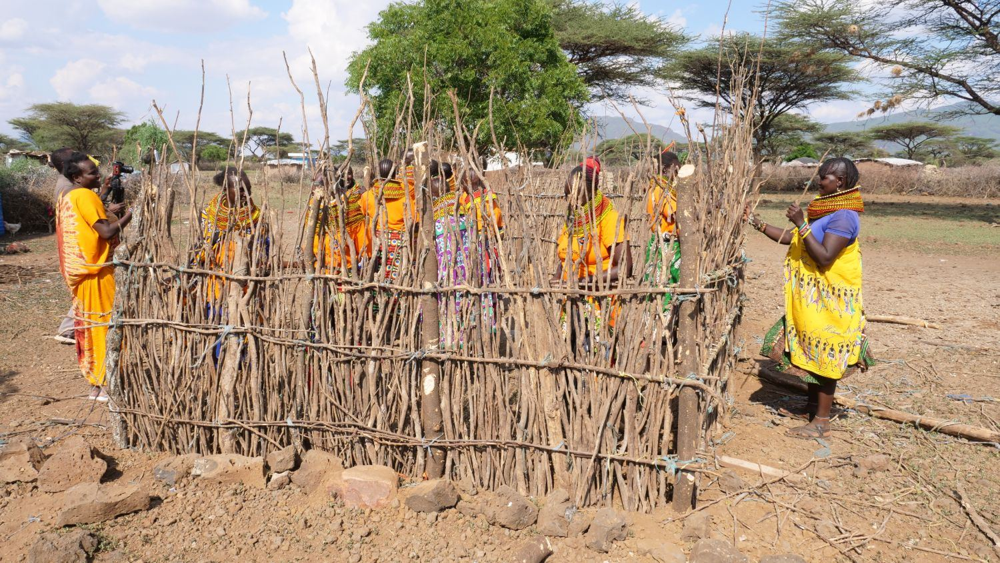
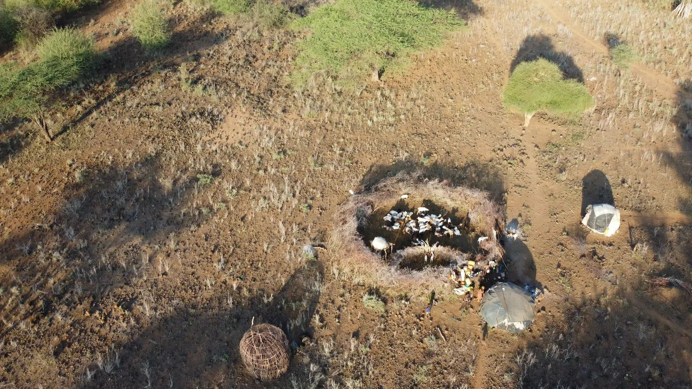
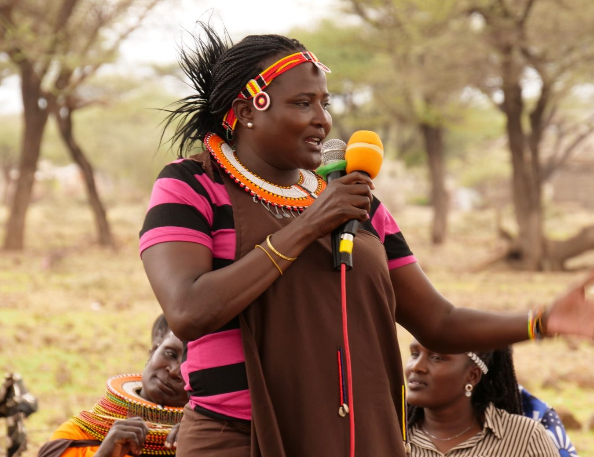

Every photo on the site is by Cliffe Wasike, shared for the Foundation's website on 15 Nov 2026. Say a number ("use 4 for the hero") and it gets swapped in. Photos 1-8 are in the home slideshow; 9 is the founder photo. Photos of children are kept off the site. Not for reuse without the Foundation's OK.









Video placeholder: "Northern Kenya: from the forest to the desert", Xavier de Diego, CC BY-SA 3.0, until Cliffe sends the Foundation's own footage.
Topographic map: © OpenStreetMap contributors, SRTM; map style © OpenTopoMap (CC BY-SA). County borders and outlines: geoBoundaries Kenya ADM1 and Natural Earth (public domain).